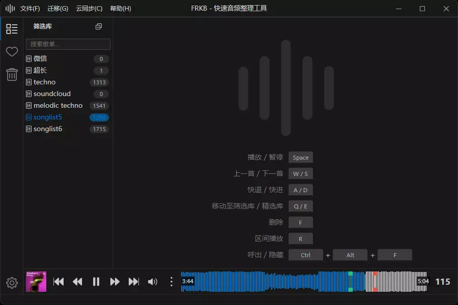
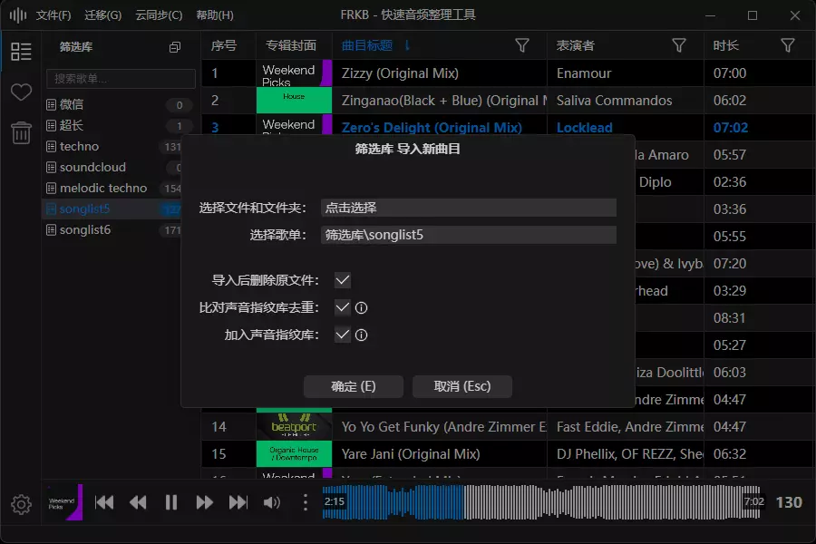
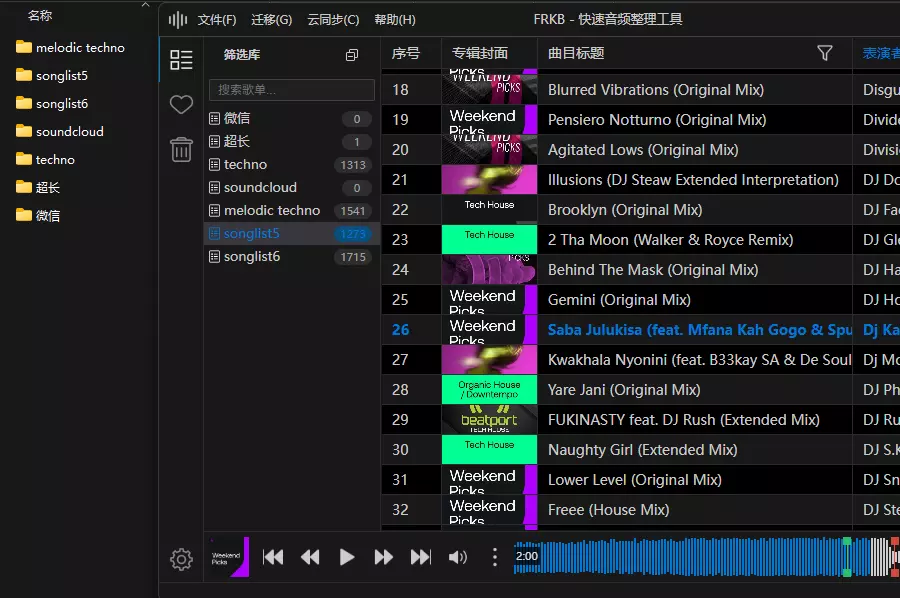

核心特性
键盘优先的人机工学：大幅减少鼠标移动与点击，高频操作触手可及
内容感知去重（忽略元信息）：基于音频特征识别重复，导入时即时提示
所见即所得的文件映射：界面分组/目录即真实磁盘层级，重命名/移动即刻生效
跨平台与开源透明：Windows / macOS，欢迎检视与贡献

常见问题
如何选择安装包？
根据你的系统选择 Windows 或 macOS。
支持哪些格式？
mp3、flac、wav、aff、aiff。
如何升级到新版本？
应用支持自动在线升级；无需手动下载。
开源协议与贡献？
请在 GitHub 查看 License 与贡献指南。
开源
本项目开源，欢迎反馈与贡献。